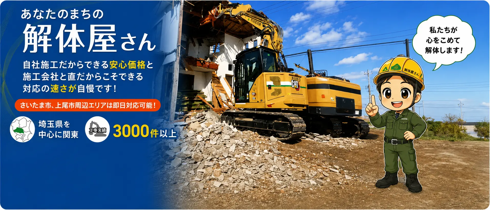
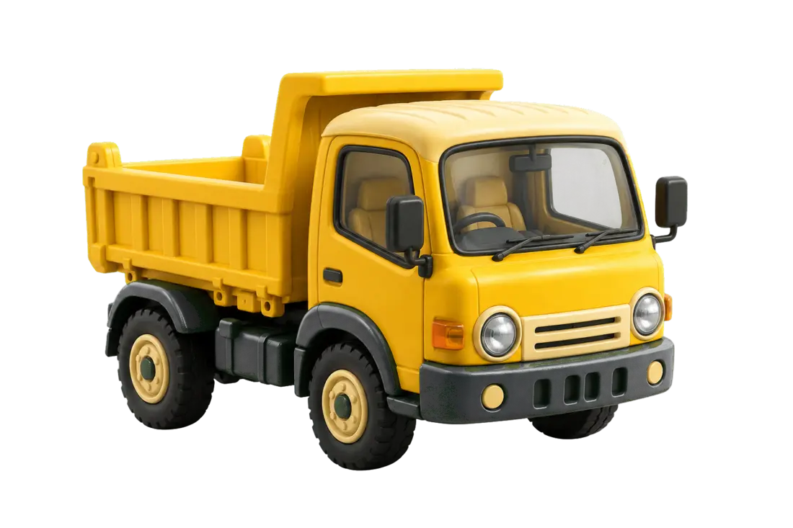
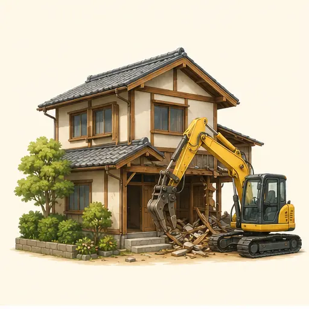
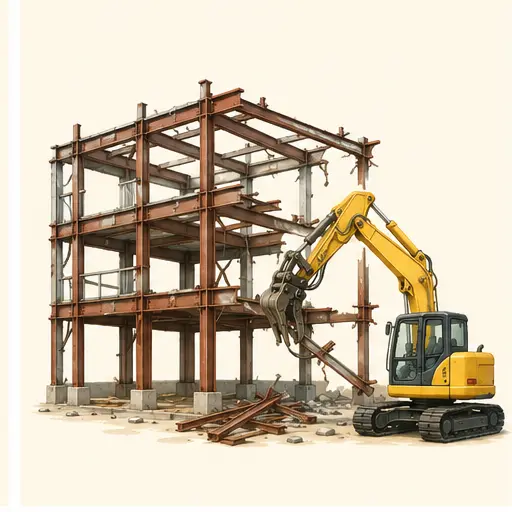
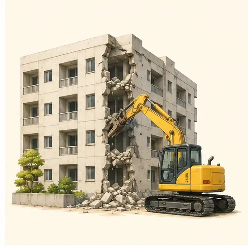
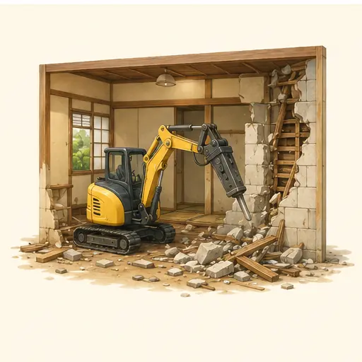
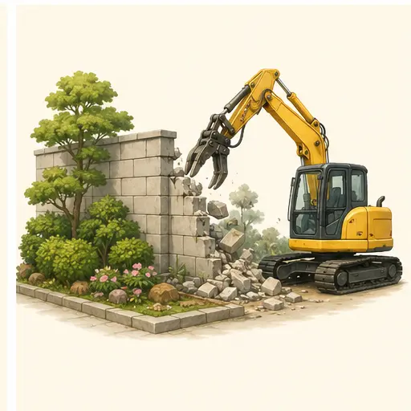
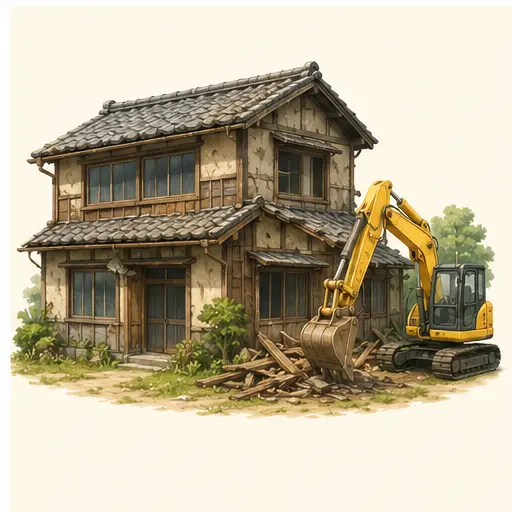

自社施工で
安心価格
相談から施工まで自社で一貫対応。余計な中間コストを抑えます。

WHY AKIYAMA
相談から施工まで自社で一貫対応。余計な中間コストを抑えます。
工事内容と費用を丁寧にご説明。わからないまま進めません。
現地調査からお見積りまで、迅速かつ丁寧にお応えします。
積み重ねた経験を活かし、現場ごとに最適な施工をご提案します。
工事前のご挨拶から騒音・粉じん対策まで、細やかに対応します。
手続きや工事の流れもわかりやすく。最後まで伴走します。

SERVICE

戸建住宅や空き家を、ご近所へ配慮しながら丁寧に。

倉庫・店舗・工場など、鉄骨造の建物にも対応します。

確かな施工管理で、鉄筋コンクリート造も安全に。

原状回復からスケルトン工事まで、用途に合わせて対応。

塀・庭石・カーポートなど、建物まわりの撤去もお任せ。

ご相談から解体・整地まで、まとめてお手伝いします。
FLOW
WORKS & VOICE
工期｜10日間 地域｜さいたま市
近隣への配慮までしっかりしてくれて、とても安心できました！
工期｜15日間 地域｜上尾市
見積りがわかりやすく、最後まで安心してお願いできました！
MORE AKIYAMA
解体工事のことなら、お気軽に！